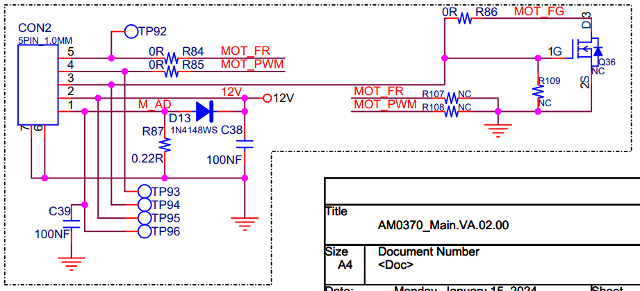

无刷直流电机（Brushless Direct Current Motor, BLDCM）克服了有刷直流电机的先天性缺陷，以电子换向器取代了机械换向器，所以无刷直流电机既具有直流电机良好的调速性能等特点，又具有交流电机结构简单、无换向火花、运行可靠和易于维护等优点。无刷直流电机的实质是直流电源输入，采用电子逆变器将直流电转换为交流电，有转子位置反馈的三相交流永磁同步电机。
描述中几个关键性词解释：

驱动示例链接：https://git.breo.cn/804590/n5-mini-pro/-/tree/main/code/main_board/app/driver?ref_type=heads
drv_pwm_input.c drv_pwm_gpio.cdrv_pwm_input.h drv_pwm_gpio.h// drv_pwm_gpio.h 接口文件
int timer_gpio_init(ETIMER_SOURSE tim,ETIMER_REMAP remap,ETIMER_CH channel,ETIMER_MODE mode);
// drv_pwm_input.h 接口文件
typedef enum{
ETIMER_1 = 1,
ETIMER_2,
ETIMER_3,
ETIMER_4,
ETIMER_5,
ETIMER_6,
ETIMER_7,
ETIMER_8
}ETIMER_SOURSE;
typedef enum{ //bit[11:10]
ETR_REMAP_0 = 0,
ETR_REMAP_1,
ETR_REMAP_2,
ETR_REMAP_3
}ETIMER_REMAP;
typedef enum{
ETIMER_CH_1 = 1,
ETIMER_CH_2,
ETIMER_CH_3,
ETIMER_CH_4
}ETIMER_CH;
typedef enum{
ETIMER_MODE_NONE = 0X00,
ETIMER_MODE_PWM = 0x01,
ETIMER_MODE_INPUT = 0x10
}ETIMER_MODE;
typedef enum{
EC_CMD_SET = 1,
EC_CMD_GET
}ECONTROL_CMD;
typedef enum{
EINPUT_NONE = 0,
EINPUT_DONE = 1,
EINPUT_TIMEOUT = 2
}EINPUTEVENT;
struct ec_pi_config
{
uint32_t psc; /* 预分频 0~0xFFFF */
uint32_t period; /* 计数值 0~0xFFFF */
ETIMER_MODE channel[4]; /* channel 1~4；参考ETIMER_MODE选择模式 */
uint32_t value[4]; /* pwm模式下pluse，input模式下FREQ */
};
struct ec_pwm_input_config
{
uint8_t channel; /* channel 1~4 */
uint32_t psc; /* 预分频 1~65536 */
uint32_t period; /* 计数值 0~0xFFFF */
uint32_t value; /* pwm模式下pluse：在period范围内，input模式下FREQ */
};
struct ec_tim_device
{
TIM_Module* tim_handle;
uint32_t int_clock;
struct ec_pi_config pwm_input;
};
struct capture_list
{
uint16_t ic_readvalue1;
uint16_t ic_readvalue2;
uint32_t captureflag;
uint32_t capture;
uint32_t timfreq;
uint32_t timenterirqcnt;
uint8_t first_input;
uint8_t input_done;
uint8_t timeout_flag;
uint8_t timeout_status;
uint32_t timeout;
};
int drv_hw_pwm_input_init(ETIMER_SOURSE tim,ETIMER_REMAP remap,ETIMER_CH channel,ETIMER_MODE mode); //初始化
int drv_pwm_input_control(ETIMER_SOURSE tim, ETIMER_MODE mode, ECONTROL_CMD cmd,struct ec_pwm_input_config *pi); //参数配置
int drv_pwm_input_enabled(ETIMER_SOURSE timx, ETIMER_CH channel,ETIMER_MODE mode,bool enable); //pwm/inputcap使能
int drv_set_pwm_pulse_percent(ETIMER_SOURSE timx, ETIMER_CH channel,uint8_t percent); //设置百分占空比
int drv_set_pwm_pulse_Thousandths(ETIMER_SOURSE timx, ETIMER_CH channel,uint16_t Thousandths); //设置千分占空比
int tim_user_get_callback(ETIMER_SOURSE tim,ETIMER_CH channel,EINPUTEVENT event,uint32_t timfreq); //inputcap开启后触发的回调函数
驱动示例链接:https://git.breo.cn/804590/n5-mini-pro/-/blob/main/code/main_board/app/user/user_board.c?ref_type=heads
PWM/INPUTCAP初始化#define PWM_DEV_MOTOR1_HANDLE ETIMER_4
#define PWM_DEV_MOTOR1_CH ETIMER_CH_1
#define PWM_DEV_MOTOR1_REMAP ETR_REMAP_0
#define INPUT_DEV_MOTOR1_HANDLE ETIMER_4
#define INPUT_DEV_MOTOR1_CH ETIMER_CH_2
#define INPUT_DEV_MOTOR1_REMAP ETR_REMAP_0
struct ec_pwm_input_config info1 = {PWM_DEV_MOTOR1_CH,2,1799,1800}; //20K,input和pwm一个通道需调整input超时时间
drv_hw_pwm_input_init(PWM_DEV_MOTOR1_HANDLEPWM_DEV_MOTOR1_REMAP,PWM_DEV_MOTOR1_CH,ETIMER_MODE_PWM);
drv_pwm_input_control(PWM_DEV_MOTOR1_HANDLEETIMER_MODE_PWM,EC_CMD_SET,&info1);
drv_pwm_input_enabled(PWM_DEV_MOTOR1_HANDLEPWM_DEV_MOTOR1_CH,ETIMER_MODE_PWM,ENABLE);
info1.channel = INPUT_DEV_MOTOR1_CH;
drv_hw_pwm_input_init(INPUT_DEV_MOTOR1_HANDLEINPUT_DEV_MOTOR1_REMAP,INPUT_DEV_MOTOR1_CHETIMER_MODE_INPUT);
drv_pwm_input_control(INPUT_DEV_MOTOR1_HANDLEETIMER_MODE_INPUT,EC_CMD_SET,&info1);
drv_pwm_input_enabled(INPUT_DEV_MOTOR1_HANDLEINPUT_DEV_MOTOR1_CH,ETIMER_MODE_INPUT,DISABLE);
#define PIN_MOTOR1_FR 53
void board_motor_dir_set(int8_t ch,bool en) //设置电机方向，IO口初始化略
{
if(ch == 0)
{
pin_set_func(pin_handle(PIN_MOTOR1_FR), en);
}
}
void board_motor_ch_set_en(int8_t ch, bool en) //使能
{
if(ch == 0)
{
// drv_pwm_input_enabled(PWM_DEV_MOTOR_HANDLE,PWM_DEV_MOTOR_CH,ETIMER_MODE_PWM,(MCENABLE)en);
drv_pwm_input_enabled(INPUT_DEV_MOTOR1_HANDLE,INPUT_DEV_MOTOR1_CH,ETIMER_MODE_INPUT,en);
}
}
#define MOTOR_PWM_REVERCE 1 //PWM值与转速正比：0，反之：1
void board_motor_ch_set_duty_cycle(int8_t ch, int8_t value) //设置电机占空比
{
if (value < 0){
value = 0;
}
if (value > 100){
value = 100;
}
uint8_t real_percent;
#if MOTOR_PWM_REVERCE
real_percent = 100 - value;
#else
real_percent = value;
#endif
if(ch == 0)
{
// logVerbose("ch0,value=[%d]",value);
drv_set_pwm_pulse_percent(PWM_DEV_MOTOR1_HANDLE,PWM_DEV_MOTOR1_CH,real_percent);
}
}
static uint32_t timfreq_value[1];
static uint32_t tim_getcnts[1];
int tim_user_get_callback(ETIMER_SOURSE tim,ETIMER_CH channel,EINPUTEVENT event,uint32_t timfreq) //编写输入捕获回调函数
{
if(tim == ETIMER_4)
{
if(event == EINPUT_DONE)
{
tim_getcnts[0]++;
timfreq_value[0] = timfreq;
// logDebug("T5 channel=%d,timfreq=%d",channel,timfreq);
}else if(event == EINPUT_TIMEOUT)
{
timfreq_value[0] = 0;
// logDebug("T5 failed!");
}
}
return 0;
}
uint32_t board_motor_ch_get_input_capture(int8_t ch) //获取电机输入捕获频率
{
uint32_t motor_input_freq = 0;
if(ch == 0)
{
motor_input_freq = timfreq_value[0];
}
return motor_input_freq;
}
uint32_t board_motor_inputap_cnts_get(int8_t ch) //获取电机输入捕获次数
{
uint32_t motor_cnts = 0;
if(ch == 0)
{
motor_cnts = tim_getcnts[0];
}
return motor_cnts;
}